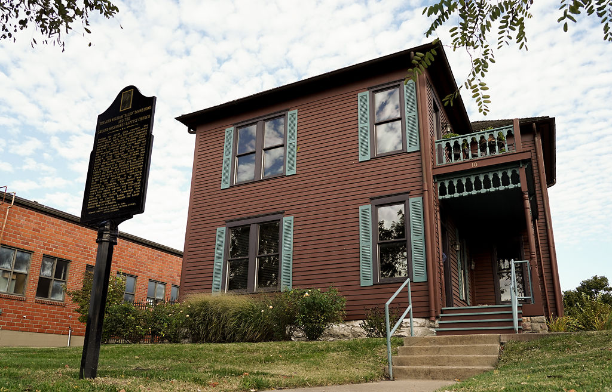
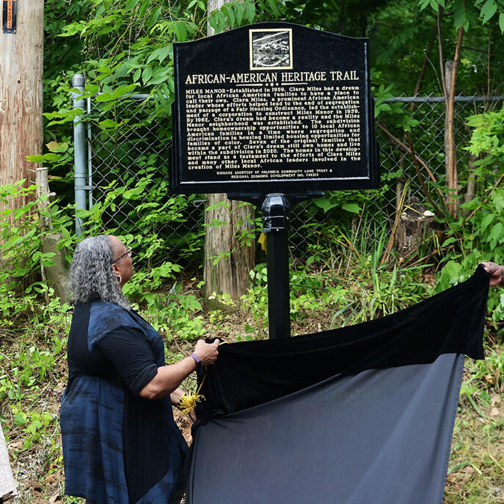

In today’s climate, racial tension is still happening, and Black Columbia residents still remember what the city did to its community. Because of this, an organization called REDI, started the African American Heritage Trail, a two-mile urban trail that goes through downtown Columbia, Mo. And features over 20 markers that honor black people and different black owned institutions from the last 200 years since the beginning of the city.
A Trail Marker sits on the grounds outside the J.W. 'Blind' Boone Home. Credit: Baylee Konen.
Since its founding over 200 years ago, Columbia has been divided by race. Because blacks were often not allowed to shop or social in white-owned businesses, they began to start their own. They began what was once the Sharp End district in downtown Columbia where Columbia’s black community materialized in its own independent city inside a city. After the 1960’s and the urban renewal programs destroyed many businesses and the entire identity of Sharp End, the black community in Columbia was angry. Years later, the community is still remembering what was taken from them by creating this Heritage trail of their ancestor’s history in the city that fought hard to try and erase them from today’s generation of young individuals.
Sheila Collins-Tippin unveils a new marker in the Miles Manor neighborhood in Columbia. The new marker honors Clara Miles, a prominent African American leader who helped with the establishment of the Miles Manor Subdivision in 1959. Credit: Meghan Matty.
The Heritage trail project was completed in 2020 and was spearheaded by the Sharp End Heritage Committee and collaborated with the Parks and Recreation department. Follow the trail by using the free OtoCast App. The app will offer a more immersive experience by showing images and accompanying audio while you walk the trail.
Map illustration by Makalah Hardy